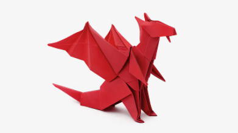
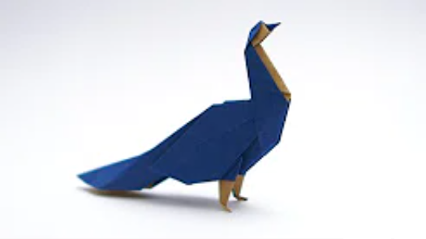
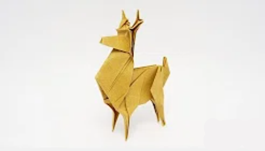
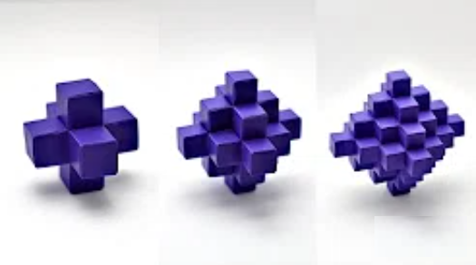

Follow Us
Origami Designs
About Us
⭑ Origami ⭑
This is the place for all of your origami needs
All designs by Jo Nakashima

Dragon
The Welsh flag has a dragon on
it.
The common notion of a dragon
is a European dragon.
The word "dragon" ultimately
comes from the Greek word
"drakon"meaning water snake or
serpent of huge size.
Butterfly
The word "Butterfly" was first
used to describe the brimstone
butterfly.
Butterflies can only feed or fly
when their bodies are warmed to
at least 30°C.
Some butterflies can fly 50km/h
or faster.

Peacock
They are the largest flying birds.
As omnivorous birds, peacocks
fed on various edible items.
Peacock tail covers over 60% of
the total length of their bodies.
Peafowls have four toes on each
foot.

Deer
There is a species of deer in
Germany who won’t cross the
border where the Iron
Curtain once stood.
Cervelt, a fibre softer than
cashmere is obtained from deer.
There is a species of deer
with fangs.

Pixelated Octahedron
There is a species of deer in
Germany who won’t cross the
border where the Iron
Curtain once stood.
Cervelt, a fibre softer than
cashmere is obtained from deer.
There is a species of deer
with fangs.